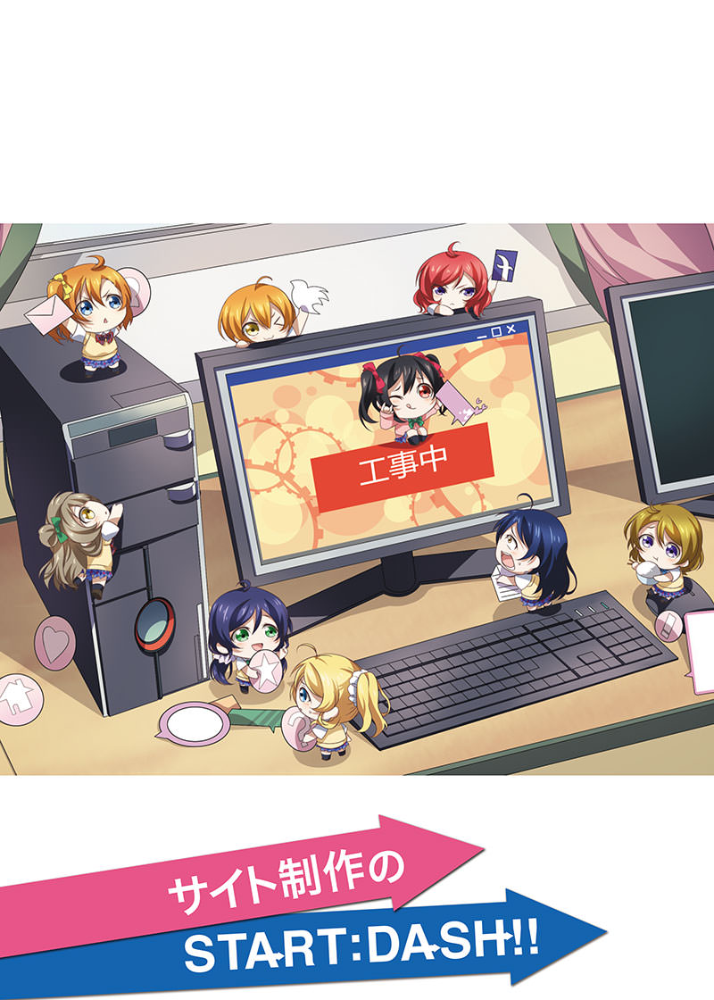

O2 Project in C90
コミックマーケット90 3日目（2016/8/14）西f47b

サイト制作のSTART:DASH!!
それは僕たちの語られなかった制作秘話──
| ページ数 | 66ページ |
|---|---|
| 価格 |
800円 「Steins;Git」とセットで1,500円 |
| イラスト | GiantRobot |
| 著者 | @kubosho_ @fruitsnoodle |
| 内容 |
本書は「アニメ内にでてきたラブライブ！参加者募集サイトの作り方を、企画と開発の両面から具体的に説明する」というコンセプトのもと執筆された本です。 企画から開発までサイト制作の流れをなぞることで、実用的なスキルが身につけられることをゴールとしています。 |
| 目次 |
|
| 通販 |
Steins;Git 第二版
GitをSteins;Gateの世界観で説明
| ページ数 | 66ページ |
|---|---|
| 価格 |
800円 「サイト制作のSTART:DASH!!」とセットで1,500円 |
| イラスト | GiantRobot |
| 著者 | @kubosho_ |
| 内容 |
「Steins;Gateのアニメを全話もしくはゲームで全てのエンディングを見たかつ、Gitに触れたことが無いもしくは触り始めたばかりという人が、使い方を知るきっかけになる」というコンセプトで書かれた本です。 |
| 目次 |
|
| 通販 |